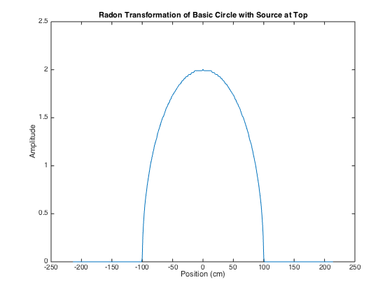
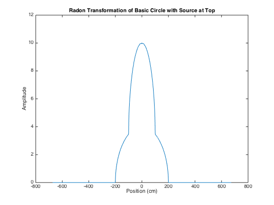
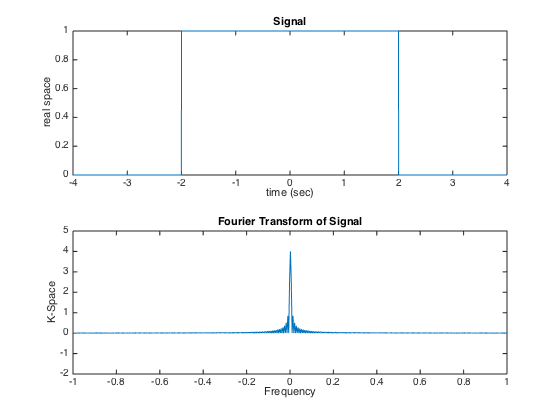

Kyle King
BIOE420 - HW2 March 3, 2015
Contents
Question 1
clc, close all clear all disp(['Question 1']) step = 0.01; % index of image quality % Set circle parameters radius0 = 1; coefficient0 = 1; maxCoord = radius0 + 0.5; % Create two matrices with values for each coordinate of the matrix [X0, Y0] = meshgrid(-maxCoord:step:maxCoord, -maxCoord:step:maxCoord); % Calculate the comlpex magnitude from center coordinate I0 = abs([X0 + Y0*i]); % Find all complex magintudes within the radius of desired circle I0(find(I0 <= radius0)) = coefficient0; I0(find(I0 > radius0)) = 0; % Take the radon transform [R0, xp0] = radon(I0, 0); % 0 - directly from above % Show the created image, then plot the transform figure, % subplot(2,1,1), imshow(I0) % subplot(2,1,2), plot(xp0, step*R0); title('Radon Transformation of Basic Circle with Source at Top'), xlabel('Position (cm)'), ylabel('Amplitude') % Set circle parameters radius = [1,2]; coefficient = [3,1]; maxCoord = radius(2) + 1; % Match the dimensions of each matrix % Account for when radius < coefficient by creating an arbitrary scalar value arbit = 10; % Create two matrices with values for each coordinate of the matrix [X1, Y1] = meshgrid(-maxCoord:step:maxCoord, -maxCoord:step:maxCoord); % Calculate the comlpex magnitude from center coordinate I1 = abs([X1 + Y1*i]); % Find all complex magintudes within the radius of desired circle and account for when radius < coefficient I1(find(I1 > radius(1))) = radius(1)*arbit; I1(find(I1 <= radius(1))) = coefficient(1); I1(find(I1 == radius(1)*arbit)) = 0; % Repeat for the second circle [X2, Y2] = meshgrid(-maxCoord:step:maxCoord, -maxCoord:step:maxCoord); I2 = abs([X2 + Y2*i]); I2(find(I2 > radius(2))) = radius(2)*arbit; I2(find(I2 <= radius(2))) = coefficient(2); I2(find(I2 == radius(2)*arbit)) = 0; % figure, subplot(1,2,1), imshow(I1), subplot(1,2,2), imshow(I2) I = [I1, I2]; % combine the two circles side-by side with aligned center coordinate % figure, imshow(I) [R, xp] = radon(I, 90); % 0 - directly from above (believe this is ccw) figure, plot(xp, step*R); title('Radon Transformation of Basic Circle with Source at Top'), xlabel('Position (cm)'), ylabel('Amplitude')
Question 1 
Question 3
clear all disp(['Question 3']) Fs = 2^8; L = 8*Fs; t = linspace(-4, 4, L); y = zeros(1, L); for i = 1:L if (t(i) >= -2 && t(i) <= 2) y(i) = 1; end end figure, subplot(2,1,1), plot(t, y) title('Signal') xlabel('time (sec)'), ylabel('real space') Y = fftshift(fft(y),2); subplot(2,1,2), plot(t, abs(Y/Fs)) axis([-1 1 -2 5]) title('Fourier Transform of Signal') xlabel('Frequency'), ylabel('K-Space')
Question 3
Question 4
clear all disp(['Question 4']) % Part a: % Proton - Neutron - Electron MassT = 6*1.007276 + 6*1.008665 + 6*0.000548; % (u - unified atomic mass units) MassActual = 12; % (u) MassDefect = abs(MassActual - MassT); % (u) disp(['The Mass Defect = ', num2str(MassDefect), 'u']) % Part b: % c = 299792458; % (m/s) % E = MassDefect*c^2; % (u*c^2) conversionFactor = 931; % (MeV/u*c^2) BindingEnergy = MassDefect*conversionFactor; % (MeV) [E = mc^2] disp(['The Binding Energy = ', num2str(BindingEnergy), ' MeV'])
Question 4 The Mass Defect = 0.098934u The Binding Energy = 92.1076 MeV
Question 5
clear all disp(['Question 5']) % N = N0*exp(-lambda*t) % Half life is where: N/N0 = 1/2 % Solve for Lambda = -t*log(1/2) % X: lambdaX = -log(.5)/28; % hr^-1 disp(['lambdaX = ', num2str(lambdaX), ' per hour']) % Y: lambdaY = -log(.5)/68; % day^-1 disp(['lambdaY = ', num2str(lambdaY), ' per day'])
Question 5 lambdaX = 0.024755 per hour lambdaY = 0.010193 per day